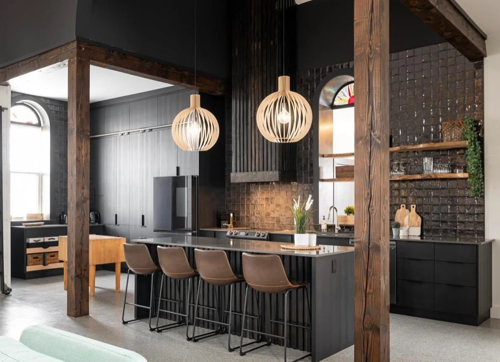

Renovation
Church Renovation
A black kitchen with timber accents, vaulted living spaces and arched openings give this renovated church a distinct character.

Renovation
A black kitchen with timber accents, vaulted living spaces and arched openings give this renovated church a distinct character.
